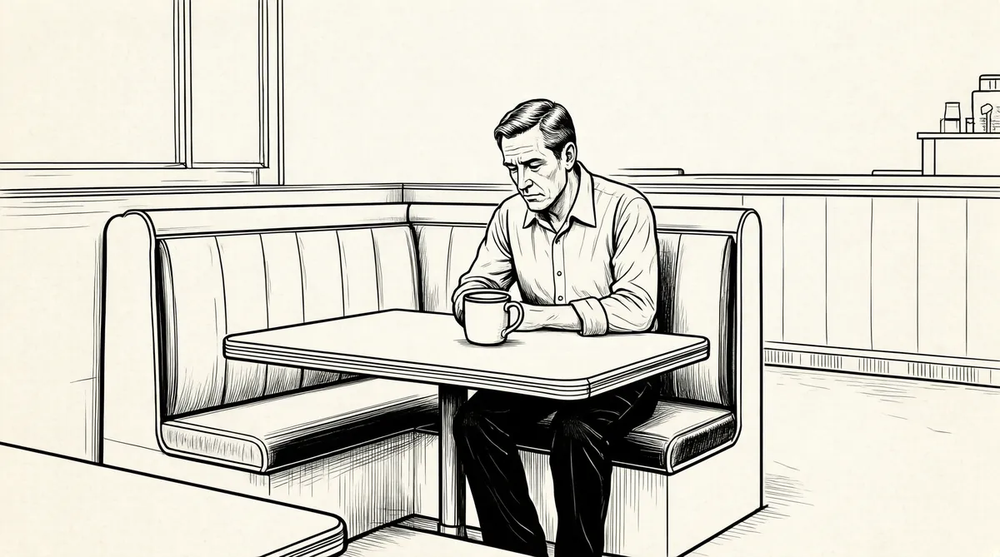

第56章 富人统治、富人享受

巴菲特独自飞回内布拉斯加。除了睡觉之外，他每一分钟都忙于各种各样的事情，读财务报告、《金融时报》、《纽约时报》、《华尔街日报》，看CNBC的电视节目，接电话；晚上不工作的时候就打桥牌，有时也在线浏览新闻，再有就是玩电脑直升机游戏。
一周后，有一次他在电话里痛哭流涕，泣不成声，哽咽得上气不接下气，悲伤的情感如洪水决堤般喷涌而出。
发泄过后，他努力调整自己的情绪，继续接电话。他后悔自己没有在凯瑟琳的葬礼上发言。工作努力、台上讲话自如洒脱的巴菲特认为自己应该在凯瑟琳的葬礼上为她送上一份祝福，所以更多的是遗憾，这种想法反复缠绕着他。
“如果那天我一直和她打桥牌，她可能不会摔倒。”后来巴菲特伤心地自责，“我就会开着她的高尔夫球车亲自送她回去，她可能不会死。”
但是，凯瑟琳可能还是会要求自己走上台阶，没有人知道她的死是因为摔倒中风，还是因为中风摔倒。
然而，巴菲特还是觉得自己错失了机会，因此备受折磨。有时候他甚至觉得如果他一直陪着凯瑟琳，无论如何也会让她安全的。
几周过后，只要提到凯瑟琳的去世，巴菲特还是不由自主地伤心落泪，必须停下来调整情绪。然后，就像摩托车转了个弯重新启动一样，他又开始继续谈论别的话题。
8月份，许多事情帮助他从悲伤中解脱出来。他开始规划9月份将进行的第十届（即最后一届）奥马哈慈善高尔夫球锦标赛，并盼望着10月去法国比里亚茨举办巴菲特集团会议。这段时间，他还飞到怀俄明州的科迪，和苏珊在赫伯特·艾伦的J9农场过了一个长长的周末，农场位于北福克。
巴菲特宁愿看一部西部电影也不愿意在东部风格的农场闲逛。在太阳谷年会的时候，他就和自己能够谈得来的朋友在一起打发时间。而这次在科迪，他和苏珊过了一个悠闲自在的周末，和他们一起过周末的还有媒体大亨巴里·迪勒和妻子黛安娜·冯·弗斯腾伯格，唐纳德和米基·基奥，电影导演迈克·尼科尔斯和妻子，新闻播音员黛安娜·索耶，制片人悉尼·波拉克，影星坎迪丝·伯根，英特尔的首席执行官安迪·格鲁夫和妻子伊娃等人。
巴菲特夫妇那天晚上到达的时候已经很晚了，就在中心酒店旁边的雪松小木屋住下了。第二天早餐的时候他们向已经到来的客人问好（巴菲特的早餐通常就是前一天晚上没有吃完的点心）。这一天还有很多客人到达，而巴菲特这一天的其他时间则在酒店或者小木屋看书、玩儿电脑桥牌、看艾伦特意从网上给他打印的新闻。一些客人骑着艾伦农场的马沿着峡谷去看大角鹿和小鹿，一些客人骑着山地自行车去探险，还有的在流经农场的河里钓鱼。巴菲特没有参加所有这些活动。晚饭的时候他出现在酒店大长方形餐桌旁边，客人们也都坐在那里，周围是黑色的皮质家具和带有浪漫色彩的乡村风格油画，油画都是著名画家托马斯·哈特·本顿和弗雷德里克·雷明顿的作品。巴菲特主持了一次餐桌沙龙，话题涉及政治、金融和全球时事。客人们享用鱼肉、鸡肉、野味和沙拉的时候，科迪的厨师也在大口吃肉。1
晚餐后，艾伦的朋友阿尔·奥霍乐弹起了钢琴，客人们一起看着坎迪丝·伯根的歌曲集唱歌，格什文、欧文·伯林和科尔·波特轮流领唱。苏珊照例进行独唱。巴菲特弹奏夏威夷四弦琴，和往年一样唱《TheHut-SutSong》，电影制片人悉尼·波拉克和巴菲特一起唱——这首歌总是让大家产生一种害怕心理，这反而让更期待表演这首歌。
Hut-SutRawlsonontherillerahandabrawla，brawlasooit.Hut-SutRawlsonontherillerahandabrawlasooit.2
从科迪回来，巴菲特的假期就结束了。距离他的生日还有几周，表面上看他并不关注生日，其实他内心非常担心生日的到来。每年生日之前的一大亮点就是提前几周就有大量来自朋友们（或者说，更多的是来自陌生人）的贺卡、礼物和信件纷纷飞到基威特大厦。巴菲特对此并不厌倦，但是要通过生日礼物让一位亿万富翁（不希望自己又老一岁，不在乎任何财产的人）高兴却不是一件容易的事情。然而他感谢所有的贺卡和来信，回忆起过去生活中点点滴滴的所有祝福都让他感动。另外，他现在有太多的可口可乐纪念品、内布拉斯加足球招贴、旗帜、被子、拼贴画和其他礼物以及他和一些知名人士的合影，所有这些东西足以摆满基威特大厦的一层走廊。他的生日确实非常低调，通常只是和家人以及几个朋友在橄榄园这样的餐厅一起吃顿晚餐。
巴菲特71岁了，他不相信自己已经71岁了。在40岁、50岁、60岁和70岁生日到来的时候，他同样不相信自己当时的年龄。但是今年尤其不愿意提到自己的生日，因为凯瑟琳去世后，他不愿意面对任何让自己意识到时间飞逝的事物。
所幸，奥马哈高尔夫球锦标赛——由巴菲特赞助、各类当地机构受益的年度赛事就在他生日过后不久进行，让他有机会调整一下情绪。公司首席执行官、各界名人、朋友、亲戚以及所有巴菲特认识和欣赏的人，都来到奥马哈乡村俱乐部参加高尔夫球和网球比赛。3前来参加这次活动的客人是巴菲特用心挑选的，就像挑选股东、挑选有资格参加奥马哈股东大会的成员、挑选巴菲特集团的成员一样。随着比赛日期的一天天临近，员工们忙着修订客人名单、安排接机以及俱乐部高尔夫球手的餐饮娱乐。巴菲特愿意了解每一个细节：邀请了哪些客人，某位客人此前曾经来过几次，谁第一次前来参加比赛，这次比赛可以筹集多少钱。
许多客人都参加了星期一晚上在奥马哈乡村俱乐部举办的晚餐聚会，奥斯卡奖得主、词曲作家马文·哈姆利施出席了晚餐聚会。4每年他都坐在钢琴旁边，应人们要求即兴编写个性歌曲。
马文没有打高尔夫球，几年前来参加锦标赛，他喜欢苏茜，苏茜也喜欢他。他说：“你为什么不让我在前一天晚上为提前到来的客人进行一次小小的表演呢？”这一定会是高尔夫球锦标赛最精彩的部分。你说：“我希望选择三号木杆不会再打出该死的左曲球。”这就可以是一首歌。人们认为这是胡乱编造，其实不是。如果你说“我不相信自己的岳母会偷餐厅的糖包”，30秒后，他就会奏出一段小调，和着这句词儿。
第二天碧空万里。大约8点的时候巴菲特的电话响了，是德文·斯珀吉翁打来的，她是《华尔街日报》的记者，负责报道伯克希尔–哈撒韦。“哦，天哪，沃伦，快看电视。”她说。巴菲特打开新闻频道。电话两头，他们都看到了一场可怕的“飞机失事”。镜头转向了世贸中心的北楼，大厦顶层在巨大的火焰吞噬下倾倒。镜头又转向一架飞机，环绕大厦顶部，随即撞向南楼的一侧，爆炸后升起一团蘑菇云火焰，犹如原子弹爆炸一般。新闻频道开始重复播放这些镜头的时候，他们都静静地看着：飞机转向，撞向大楼。“德文，”巴菲特说，“世界变了。”巴菲特开始询问德文办公室的情况，她的办公室距离芝加哥的西尔斯大厦两个街区。“听着，”他说，“那不是一个安全的地方。《华尔街日报》在纽约的总部位于世贸中心对面。那里的员工必须立即疏散，同时跟踪报道该事件。”通过这番对话，斯珀吉翁可以感受到巴菲特思维活跃，他进入了一种最理智的处理问题的状态。5
他挂上电话的同时，美国联邦航空局已经发出通知，暂停美国所有航空公司的航班起飞。几分钟后，美国航空77号航班撞向五角大楼。之后大约15分钟，也就是白宫开始疏散工作人员的时候，巴菲特已经根据来自各方的信息，对自己的工作做出安排。他给通用再保险公司打了一个电话（他应该在第二天去通用再保险公司），他说如果机场开放，航班恢复正常，就计划飞到康涅狄格州亲自到通用再保险公司。6在康涅狄格州相邻而居的通用再保险公司和阿吉特·贾殷管理下的伯克希尔再保险公司都是承保恐怖主义损失的国际门户。巴菲特此时与他们会面是为了在紧要关头和几位经理一起商讨如何面对这次突发的重大事件。
就在巴菲特考虑通用再保险公司的赔付计划之时，世贸中心南楼内部起火倒塌，五角大楼的一角倒塌。几分钟内，美国联合航空公司93号航班在宾夕法尼亚州尚克斯维尔附近坠毁。接下来的半个小时，政府大楼的人员纷纷疏散，世贸中心北楼倒塌。纽约股票交易所关闭，曼哈顿区的市民冒着呛鼻的烟雾，踩着满地的碎片纷纷撤离。
在奥马哈高尔夫球场的每一个人都因此受到了影响，幸好影响不是很大。许多人的朋友、亲戚、邻居或工作上认识的熟人在世贸中心工作。高尔夫球场的工作人员耐心满足大家此时的需求，帮助人们做一些具体的工作。安·塔特洛克、诚信信托公司首席执行官那一天后来就一直待在酒店客房不停地打电话，丰信信托公司总部就在世贸中心。7大约100名丰信信托公司员工失踪。当然，伯克希尔–哈撒韦的员工同样遍布全美各地，巴菲特经过一番询问得知伯克希尔–哈撒韦没有人员损失——损失的只是钱。
一些人决定马上离开，但是所有机场关闭，大家要离开也不是一件容易的事情。有几位租车走了，更多的人留了下来，一些人是因为不愿意让巴菲特觉得没面子，更多人是因为别无选择。8事发后，电台评论员拉什·林博正在前往那次锦标赛的路上，中途他就掉转飞机，回到纽约。9
这一系列重大事件发生的时候，巴菲特的工作依然按计划进行，即使在极端恶劣的工作环境下他也能顶住压力。他完成了对一家小公司的并购，此前已经开始进行相关并购工作。而后，按计划参加了与家得宝公司总裁鲍勃·纳德利的会议。10接着，他来到奥马哈高尔夫球乡村俱乐部，100多人在那里徘徊，饿了就吃汉堡和冰激凌。巴菲特告诉大家比赛还是按计划进行，但是大家可以根据自己的实际需要自由安排。客人们在俱乐部进进出出，有的去打电话，有的去看电视新闻。当地的高尔夫球专家托尼·佩萨文托和加里·维伦在午餐后为大家教授高尔夫球课程，这次锦标赛离奇般地进行着。巴菲特开着自己的高尔夫球车，按照规划好的路线在各个开球区停车，下来和大家合影。11比赛进行得异常平静，就像珍珠港袭击当天的名人高尔夫球锦标赛一般。其实，包括巴菲特在内，只有少数几个人对珍珠港事件及其影响有些印象。前来参加这次高尔夫球赛的人不是非常容易激动，其中许多人都是叱咤风云的商人，对压力习以为常，他们是面对灾难镇定自若的一代，压力对他们来说就像每天上班要穿西装系领带一样平常。
巴菲特扮演起政治家的角色，泰然自若地处理着一切。即便如此，他的大脑还在分秒不停地考虑恐怖主义的威胁和大规模杀伤性武器的巨大破坏力，以及这一切可能对经济带来的影响。
因为一直都在考虑恐怖主义的风险，所以他对突然发生的一切早有心理准备。早在5月份，他就告诉通用再保险公司和伯克希尔再保险公司在业务方面缩减恐怖主义风险集中的大厦和客户，他的思维同往常一样精明地预见了这次灾难的降临。他确实曾经以世贸中心为例说明一个客户大量集中的大厦可能产生过多风险。1220世纪90年代末恐怖主义的威胁不断上演，千禧年之初的恐怖袭击根本没有悬念可言。然而，巴菲特保护伯克希尔再保险公司躲过危险的努力完全是有先见之明的，它可能是保险行业唯一一家对恐怖袭击有所防备的公司。13
巴菲特一整天都在考虑那天晚餐后的演讲该说什么。他知道目前已经关闭的股市在重新开盘后一定面临大跌，也意识到美国的安全就此破坏，政府日后一定得面对暗中使坏的敌人。他认为自己有责任告诉人们这一切意味着什么。
那天晚上参加晚餐聚会的人通过大型电视屏幕收看布什总统的讲话，接着听巴菲特讲述恐怖主义、恐怖主义和传统战争的比较。“恐怖主义者占有很大的优势。他们可以选择时间、地点和方式，而我们很难对付狂热分子……这一次只是一个开端。我们不知道敌人是谁。现在，我们面临的是一个影子，可能还有许多影子没有现身。”14
从第二天一早开始，机场逐渐恢复运营，航班开始限时飞行，巴菲特一家依然忙于照顾没有离开的客人，为他们组织晚餐活动、网球和高尔夫球活动，一直忙到所有客人都离开奥马哈回到自己家中。15曼哈顿的清理工作在即，纽约市到处都是“寻人启事”。巴菲特在考虑如何通过自己在全美范围内广受认可的声誉为国家做点事情。股市即将恢复，这一次休市是大萧条之后股市经历的最漫长的一次休市。他同意和前财政部长罗伯特·鲁宾和杰克·韦尔奇共同参加《60分钟时事杂志》节目。杰克·韦尔奇当时刚从通用电气的首席执行官职位退休。在美国人看来，巴菲特是最权威的投资专家和股市专家。星期日晚上的节目中，巴菲特说他不会抛售股票——如果股票持续下跌，他会考虑买进，而且作了这样的解释：他相信美国经济会克服恐怖袭击带来的波澜。那时候，沃伦·巴菲特多年来沉淀的诚实守信的声誉在股市中尽人皆知，人们知道他说什么就是什么。在太阳谷，巴菲特就说过股票价格在真正复苏之前还得下跌一半。所以，他说如果股票下跌到一定程度自己就会考虑买进，而机智的人们知道他确实会这样做——但是他们也知道“一定程度”指的是“非常非常低的时候”。
第二天，道琼斯指数下跌684点，即7%，创下了单日下跌纪录。股市重新开市遭遇重创后，美联储开始干预，将利率降低了50个基点（一半）。重新开市一周后，道琼斯指数跌破14%，创下了单周下跌纪录。然而，投资者的资产下跌幅度不到1987年下跌幅度的一半——1987年下跌1/3。交易开始后，卖方就集中关注保险公司和航空公司，这些公司的经济损失最为严重。人们现在不是在黑暗中摸索，少了许多恐慌，大家都努力对未知的情况做出理智的预测。
几天之内，经历爆炸恐慌的曼哈顿区各处都设立了安检通道，巴菲特集团到比里亚茨的行程也取消了，巴菲特和伯克希尔–哈撒韦旗下的保险公司开始评估伯克希尔–哈撒韦遭遇的损失。初步估计，伯克希尔–哈撒韦损失23亿美元，这一数据后来略有上调。16迄今为止，这次损失远远高于任何一次地震、飓风、龙卷风或其他自然灾害给公司带来的损失。其中，17亿美元的损失来自通用再保险公司。
巴菲特忍无可忍，他专门在自己的网站发帖严厉批评通用再保险公司违反“保险业的基本规则”。在伯克希尔–哈撒韦，他从来没有对自己旗下的任何一家公司的管理进行过如此公开的批评，因此，贴在网站上供所有人浏览的内容对通用再保险公司的品牌简直就是致命的打击。现在通用再保险公司危在旦夕，以如此戏剧化的方式让巴菲特当众难堪，通用再保险公司可能将步所罗门公司的后尘——从此与巴菲特毫无干系，成就又一个警世故事。
1987年股市崩盘及后来的长期资本管理公司破产后，美联储曾在7周内进行过3次大规模的利率削减，通过低息贷款促使市场复苏。现在，为了制止恐慌，美联储又一次把利率调整到历史最低水平。美联储的作用就是确保银行体系保有流动资金。然而，这一次美联储将连续3年人为地保持低利率。17在低息贷款的推动下，恐怖袭击后一个月，股市就完全恢复，市场价值恢复到1.38万亿美元。但是剧变并没有结束，市场依然趋于紧张，部分原因是“9·11”事件之后短短几周美英入侵阿富汗引起的动荡。再后来就是11月份，一家名为安然公司的能源贸易公司在20世纪90年代末的股市泡沫中遗留的问题，以及一些在股市泡沫中被掩盖却没有根除的遗留问题开始显露。美国司法部介入后，安然公司因严重的财务欺诈而破产。
安然事件非常极端，但并不是罕见的事件。股市泡沫和高级管理人员大肆洗劫公司引发了一系列的财务欺诈和债券违规案件：世界通信公司、阿德尔菲亚传播公司、泰克国际公司、ImClone生物医药公司都涉及违规。2002年年初，纽约总检察长埃利奥特·斯皮策对华尔街的各大银行进行了一次闪电式的突击检查，这些银行在网络泡沫时代通过片面的股票调查进行高价股票交易。18投资者对各大公司提供的报表数据丧失信心后，股票和债券价值全面下滑。
伯克希尔–哈撒韦的最佳机会往往在全局动荡的时候到来，在其他公司没有远见、资源短缺和意志动摇的时候，伯克希尔–哈撒韦却独具慧眼、借机行动。“危机中大胆出手，机会无限。”巴菲特如是说。现在他的机会又来了。任何一个普通人在这样的时候都会力不从心，但是巴菲特多年前就开始期待这样的机会降临到基威特大厦，所以员工们早已蓄势待发。他为伯克希尔–哈撒韦买进了大量垃圾债券，进行了一系列“烟蒂”式投资。在并购内衣制造商鲜果布衣公司的时候，有员工戏称：“我们开始服务于民众的屁股了。”19被并购的还有制造相框的拉森–尤尔公司。伯克希尔–哈撒韦旗下的子公司中美洲能源对处于混乱中的威廉姆斯公司进行投资，而且并购了该公司的克恩河管材业务。20此外，伯克希尔–哈撒韦并购了加朗公司、Garanimals童装生产商，还接手了贷纳基公司的北方天然气公司（也是一家一片混乱的能源公司）。21几天之内，中美洲能源借给威廉姆斯公司一大笔钱。22伯克希尔又并购了放纵大厨公司，该公司通过7万名独立的“厨房顾问”以聚会的形式推销厨具；还并购了农用机械制造商CTB工业公司；并与投资银行雷曼兄弟公司联手借款13亿美元给当时岌岌可危的可信能源公司。
阿吉特·贾殷很快开始了恐怖主义险的业务拓展，通过对航空公司、洛克菲勒中心、克莱斯勒大厦、南美炼油产业、北海石油平台和芝加哥的西尔斯大厦进行保险，填补了突然出现的保险空白。伯克希尔再保险公司还对奥林匹克的不确定风险（即奥运会被取消，或2012年前美国可能再举办至少两届奥运会）进行保险。公司还对盐湖城举办的冬奥会进行恐怖主义袭击保险，对FIFA世界杯足球锦标赛进行同样的保险。23巴菲特此时进行的是“障碍赛跑”。
伯克希尔–哈撒韦的一些业务并不景气。巴菲特一直声称自己宁愿选择15%的随机回报也不选择10%的固定回报。业务萧条不会让他烦恼，随着时间的推移大多数公司的业务会自然好起来。然而，奈特捷公司一直没有起色，不仅仅是因为经济环境，还因为并购时该公司的独家特色已日渐淡去。从来不记得拨打航空公司热线的一些人成立公司与奈特捷竞争，尽管小型航空公司没有多大利润。巴菲特当时意识到是雄性激素促生了飞行爱好主义。“如果由女士出任航空公司的首席执行官，”他说，“我认为无序竞争的情况就会好许多。就像体育用品连锁经营行业一样，如果女士经营，体育用品的销售可能会下降到目前的1/10。”他告诉股东们奈特捷很快就会开始赢利，占领市场，但是，没有指出赢利可能不会达到预期水平，至少在近期不会。这让人失望，但还是比烧钱的纺织工业强许多。而且，奈特捷的业务非常有意思，巴菲特可以了解关于购买飞机、航班运营、航线规划、飞机保养、保险、飞行、服务乃至如何培训飞行员在内的大量细节。奈特捷是了不起的。通过奈特捷的活动，巴菲特有机会和志趣相投的人们聚会。他永远不会卖掉奈特捷，就是全球另一位超级亿万富翁动手相夺他都不会放弃。
更严重的问题就是规模不大的德克斯特鞋业公司，它简直就是问题不断的纺织工厂的再现。巴菲特后来说并购德克斯特鞋业公司是他进行的最糟糕的一次并购，而且引用了博比·贝尔的乡村歌曲“我向来只与美女共寝，但睁开眼睛却没有美女的踪影”来描述这次糟糕的并购。24巴菲特开始变革该公司的管理。曾成功经营布朗鞋业的弗兰克·鲁尼和吉姆·艾斯勒最终选择关闭德克斯特美国工厂，转到国外进行生产。25他们在美国需要付1美元雇用工人干的活儿，在其他地方只需付1毛钱就可以了。
“我错误估计了那个行业的经济发展趋势。在缅因州德克斯特镇工作的人们确实技艺精湛，但就算他们干的活儿比中国工人干的强两倍，在工资上也毫无竞争力——中国工人的工资只有他们的1/10。”
然而，尽管有赚钱的机会，巴菲特还是认为“9·11”事件给他带来的最重要的机遇和赚钱无关，而是他现在有优势也有责任通过自己的舞台影响各类事件和各种理念。过去几年中金融领域滋生的傲慢情绪消失后，美国人开始清醒，不再像20世纪90年代末期那样贪婪而盲目地投机。巴菲特认为现在正是他可以提出这一观点的时候：富人非常贪婪，而且财政政策恰好满足了富人的贪婪本性。
他的正义感在布什总统的一项提案推出后被完全激发。该提案指出，新预算的核心计划就是逐步废除存在了几十年的联邦财产税，而联邦财产税是政府占有量最大的一块遗产税。支持这项提案的人把财产税叫作“死亡税”——名字不太吉利——认为死亡不应该成为需要征税的事情。他们声称财产税会挫伤努力工作的企业家的雄心壮志，并讲述了一个知名的家庭在长辈去世后，为了支付财产税卖掉了农场的故事。无疑，现实生活中确实有这样的事情，但巴菲特指出，少数家庭的不幸完全不及对所有人的影响重要。
专业地讲，财产税不是死亡税，而是赠与税。任何人在任何时候赠与大量金钱都应该交纳赠与税。26赠与税妨碍了强盗资本家的利益获取。强盗资本家在19世纪通过赠与和继承遗产控制了大量的国家财富，形成了一个类似政府的集团——财阀，以财富为基础的统治阶级。然而，财产税的比例完全低于其他赠与税，大量的死后赠与其实是不收税的。巴菲特通过自己的影响力指出每年大概有230万美国人去世，只有不到5万人——2%的人——需要支付财产税，而财产税的一半是这5万人中的3000多人支付的——占去世人数的2‰。27这些人都是非常富有的一族，买得起湾流IV、新款Maybachs轿车，在法国拥有葡萄园，戴得起像棒棒糖和柠檬酸橙水果糖一般大小的珍珠。
至于说那些钱都是人家自己的，为什么不应该做自己想做的事情？为什么应该“资助”他人？巴菲特的答案是，他们应该向社会尽绵薄之力，因为是这个社会让他们走向富裕的。如果他们认为完全是自己努力让自己变得富裕，那么如果他们是出生在马里经受恐慌、食不果腹的家庭，家中有5个孩子，从小在科特迪瓦的可可园做苦工，他们还如何致富和成功？
如果取消财产税，必将有其他一些税收来填补由此产生的空白，因为政府需要同样数量的资金才能正常运转。
多年来，供应方理论一直假设减少税额可以促使政府削减开支，这样的理论源于一种直觉思维——如果说民众应该量入为出，政府为什么不呢？（当然，到2002年，民众也忙于根据当时人为降低的利率建立自己的房屋净值信贷额度，不再量入为出。）20年后供应方理论的争论同样如火如荼——政府收取的税款通常不够支付各类开支，因而通过借款弥补资金短缺。目前看来这一理论似乎更不可靠。取消财产税意味着政府必须增加其他税收甚或借钱保证各类开销，而借款的利息和总还款终归还是以更高的税收转嫁于民。巴菲特认为在联邦预算保持赤字的情况下提出削减财产税，实质就是伪善的最高境界。28
如果废除财产税，普通人需要支付更高税款，而财产税向来与他们无关。废除财产税的推动力量不是在俄克拉何马城拥有一小块农场的人们——不是他们，巴菲特说真正的推动力量来自占全美人口比例很小的一小部分人，他确实认识的一些人，一些非常富有（往往是暴富）的人——在曼哈顿区拥有三层顶楼公寓的人、在迪尔谷拥有带9间卧室的木屋的人、在楠塔基特购置避暑小屋的人和在哥斯达黎加购置公寓的人。巴菲特认为政治已经落入这样的一些人手中，他们可以在K街（游说街）拉拢说客，在议员耳边扇风，在对自己有利的时候进行政治性的捐赠。巴菲特没有责怪为自己的利益不择手段的人们，他甚至非常同情不得已而无休止地筹集资金的政府工作人员。他把这一切归罪于金钱万能的管理体制。
2001年布什总统上任后不久，巴菲特到国会大厦讲述政治竞选经费问题，共有38名参议员听讲，他们都是民主党政策委员会人员。随后，巴菲特通过ABC的《本周》节目和CNN的《政治内幕》节目对同一话题发表了自己的看法。巴菲特指出，竞选经费体制已经腐化，当前选举参政人员的方式等同于19世纪的塔马尼派的作风，选票和权力都是完全可以销售的产品。法律的发展方向就是让富人变得更富有，可以大量持有自己的财富，可以将财富大量留给自己的后代。巴菲特称其为“富人统治、富人享受的政府”。
巴菲特指出，为了富人的利益而推动立法的说客和专业税务人员越来越多，然而没有人为占美国人口98%的民众说话。没有自己的说客，对于98%的民众来说，最好的补救办法就是明白事情的真相，放弃投票，让那些制定立法、向普通大众征税、减少富人纳税比例的人失去民心。
保罗·纽曼、比尔·盖茨、乔治·索罗斯以及为数不多的洛克菲勒家族的人、近200名其他富人和有影响的人士，联合签署了一份请愿书（刊登于《纽约时报》），反对布什政府取消财产税的计划。29巴菲特本人没有在请愿书上签名，因为他认为还有许多工作要做。他认为富人非常幸运，完全应该纳税。“我不信任统治阶层。”他说。废除财产税就像从历届奥运会冠军中间挑人组建国家奥运会参赛队一样，他作了这样的补充：30
对于后人，财富只是别人留下的一把票根。人们可以按自己的意愿处置财富，可以去兑现也可以随手丢掉。但是财富代代相传、让后人仅仅因为出身富贵而支配他人资源的观点，已经在精英阶层中荡然消失。
富有就应该多纳税，我不介意一定的收入水平不必纳税，也不介意高于150万美元的财产要百分之百纳税。
最重要的是问一问，“结果怎么样呢？”如果政府放弃通过财产税所得的约20亿美元，就一定会通过向普通大众征税弥补这一资金空缺。全美范围内大多数民众掏自己的口袋弥补少数人应该支付的大额财产税，美国民众为此而付出的艰辛一定让人吃惊。
我不喜欢任何实质上体现人性丑陋的事物。我不喜欢那样的纳税体系，也不喜欢那样的教育体制。我不愿意看到20%的社会底层民众越来越穷。
但是关于财产税的争论越来越激烈。人们把巴菲特形象化为体恤民情的贵族党员、富足的老鳄鱼，他全力鼓励下一代靠自己的努力成功，勇敢实践典型的美国企业家精神。31
“世代财富彻底改变了精英阶层，”他在给参议员肯·萨拉查的信中这样写道，“其实，分配国家资源的人是很久以前聚集了大量财富之人的后代。”32
姑且不论这个问题有多敏感，首先是巴菲特个人的资金问题激起了关于财产税的争论。一些人声称像巴菲特这样的富人都偷税漏税，因为他们通过纳税很少的投资聚集大量资金。但是如果说巴菲特投资是为了偷税漏税，那和说婴儿喝水是为了用尿布一样荒谬。其实，是巴菲特第一个提出投资税率太低，有失公平。而且，巴菲特将争取税收公平视为自己的第二事业。他总是把自己的税率和自己秘书的收入税率进行比较，指出秘书所付的收入税率高出他的水平，这是不公平的，导致这一现象的原因就是他的大部分收入是投资所得。
巴菲特激怒了所有的富豪和准富豪，但是他的诚信在其他人心目中达到了最高境界。巴菲特发誓继续反对废除财产税，而且会坚持多年。在2003年伊拉克战争第一次交火的前几天，他在面向民主党政策委员会的一次发言中再次提出了这一问题。他说布什总统计划降低利息税的做法就是“向富人提供更多的阶级福利”。他通过《华盛顿邮报》再一次指出他的税率低于他秘书戴比·博赞科的税率。保守派对巴菲特的人民党员作风的反应更是简单粗暴。“百万富翁们对沃伦·巴菲特背叛他们的做法非常恼火。”有人这样说。33
当然，那是别人的观点。巴菲特认为美国从来就不是这样一个国家：有钱人永远是不断为自己积蓄大量财富和权力的“阶层”。
然而，“9·11”事件之后股市继续上涨已经使有钱人更有钱。每天都会出现大量的新型对冲基金。人们借助美联储规定的低利率大肆从事杠杆操作。许多人利用股票期权，通过向私募股权基金、对冲基金和组合型基金的投资人收取高达22%的管理费和佣金来迅速敛财，亿万富翁就像扔在垃圾桶旁边的浣熊一样随处可见。新经济环境下催生的大量神来之“钱”让巴菲特觉得不安，因为资金只是大量从投资者转向经纪人，没有产生任何效益。普通投资者依然——当然——只是得到普通的收益，但是一切费用都没有少。
巴菲特最不赞同的让富人更加富有的方式就是授予股票期权——自从他对所罗门公司的综合工资提案投票否决以来，再没有其他董事会邀请他参与薪酬委员会的工作。可口可乐公司2001年给道格·达夫特的股票期权共65万股。达夫特最先要求的股票期权只有在收入增加15%~20%的情况下才能兑现。股东们起初同意了达夫特的要求，巴菲特当时没有发言。不过，这一切也不会发生。一个月后薪酬委员会才意识到预定的收入增幅永远不会实现。他们收回了先前的承诺，把收入增加比例降低到11%~16%。34就像在马拉松比赛中将终点提前到19英里处一样。巴菲特完全不能相信——股东们一直在支持26英里的比赛，到颁奖的时候才知道居然是19英里的比赛！这是又一次支持富人的投票行动。迄今为止，达夫特没有什么卓著的成就，可口可乐公司的股票也没有什么长进。看着大量的股票期权无序增长，巴菲特认为必须抓住自己期待已久的机会——彻底终结虚假的股票期权会计方式。
经理人认同股票期权，因为会计历史形成了一个奇怪的规则，就是如果公司通过股票期权支付员工薪资，而不采用现金，就不计入公司成本，仿佛股票期权根本不存在一般。在“现实”中，私营公司很快就意识到这种观点的荒唐无稽。就连小贩、面包师和蜡烛制造商让与股票期权（比如20%）时，也知道自己让与的是大量的利润。
但是会计规则把股票期权作为闲钱。这样，20世纪90年代末开始出现了大量的红利收益。1980年，非常普遍的就是公司首席执行官的所得是普通蓝领工人的42倍。20年后，这一比例增加到超过400倍。35收入最高的首席执行官可以得到10亿美元年薪。2000年，花旗集团的桑迪·韦尔收入1.51亿美元。通用电气公司的杰克·韦尔奇收入1.25亿美元，甲骨文的拉里·埃利森收入9200万美元。尽管苹果公司的史蒂夫·乔布斯从1997年到1999年只拿1美元的薪水，但是他在2000年持有8.72亿美元的股票期权——还有价值9000万美元的湾流豪华飞机。36
当会计行业努力在20世纪90年代初开始改变这些规则的时候，以硅谷为代表的美国公司纷纷斥责议会、拉拢说客、赞助竞选活动，恳求代表们让他们免受糟糕的新会计规则的困扰。直到2002年经济泡沫破裂之前，他们一直成功地阻止了那些规则对自己的影响，而且险些取消制定会计规则的财务会计准则委员会。
巴菲特从1993年开始对股票期权进行评论，现在进行变革的时机终于成熟。他在《华盛顿邮报》发表了重要评论《股票期权和常识》。37
“首席执行官知道他们的股票期权值多少钱，所以才为得到股票期权而抗争。”他写道，而且再次提出了此前已经提到的问题。
“如果股票期权不是一种薪酬，那么是什么呢？
“如果薪酬不是一种开支，那么是什么呢？
“如果在计算收益时不把开支考虑进去，那么要把它们计算到哪里去呢？”
在2002年7月的太阳谷年会中，关于股票期权话题的讨论非常热烈。巴菲特凭借自己的影响力，努力推行自己的观点，大大打击了支持股票期权的游说团。当时气温比往年高很多，汗流浃背的各界名人和公司高管纷纷坐车去水上漂流，躲避酷热下的煎熬。
巴菲特抵达太阳谷不久就只身去了一些地方，但没有去他需要别人帮助才能面对的那个地方。凯瑟琳·格雷厄姆的公寓就在赫伯特·艾伦的公寓隔壁，那里是人们参加各类活动频繁经过之地。可口可乐公司马上要在艾伦的公寓召开董事会会议，会议目的是讨论股票期权，公司的大多数董事都到了，巴菲特也不会错过。
巴菲特说：“我和比尔、梅琳达一起先来到了凯瑟琳摔倒的地方。我不能自已地浑身颤抖，就像发冷一样。这样的时候人们可能会觉得难堪，但是我一点儿都不觉得难堪。我只是努力控制自己。”
随后，巴菲特通过“浴缸”记忆发挥的奇特作用让自己恢复平静。可口可乐公司的董事会做出了重大决定，在新闻发布会上宣布公司把员工的股票期权计入开支，而此前是可以不计入开支的。其他公司都没有这样做，它们给出的理由就像孩子和父母争辩一样：没有的事儿，如果有那事我也不在那里；如果我在那里，我也不会那么做的；即使我做了，也是朋友让我做的。那些公司说股票期权不是开支，如果是也没有人知道怎么计算，如果可以计算也不能从收入中扣除。对于公司的股票期权应该通过脚注表明，因为投资者可能不清楚高管人员的股票期权值多少钱。因此，可口可乐的这一声明对美国公司犹如炸弹，其威力随着新政策的宣布进一步扩张——太阳谷集会时媒体就像露营一样在花盆屏障外面等待新闻。可口可乐公司的声明显然有巴菲特在背后指点。太阳谷年会之后，《华盛顿邮报》集团模仿可口可乐公司，同样宣布将股票期权计入开支。38巴菲特在这一系列成功之后再次通过《纽约时报》发表评论《真正造假账的是谁》。39
我有一个建议：伯克希尔–哈撒韦卖给人们保险、地毯或我们的其他产品时收取股票期权，不收现金。但是，这样你能说你的公司为了换地毯支付的股票期权不是公司的成本吗？
很奇怪，没有人再继续提出质疑。而硅谷开始了与国会的又一场战争，但是其他公司开始纷纷效仿可口可乐公司和《华盛顿邮报》集团，宣布它们也将在自己的账目中把股票期权算作开支。
一年后，在2003年太阳谷年会的最后一个星期六上午，比尔·盖茨发言宣布微软不再推出股票期权。这让人们刮目相看，从此微软推出限制性股票——在一定时期内不得售出的股票，这一变革需要极大的勇气。
“宣布取消股票期权给微软带来许多压力——许多许多压力。硅谷称其为叛徒。有太多的公关人员时刻关注微软公司变化的报道。有人告诉盖茨，那么做犹如在一间满是汽油的屋子里划着一根火柴。”
“对此我要说的是，正是这些人在屋子里倒满了汽油。”盖茨说道。
关于股票期权的战争又持续了两年之久，直到财务会计准则委员会最终将其纳入条款。但是可口可乐公司的决定是突破之举，而微软的反应戳穿了硅谷人在华盛顿口径一致的技术行业集体游说。
这段时间巴菲特迅速成为有影响的政治人物。尽管财产税还是排在废除之列，但是他发现了新的目标，瞄准了过去几年中进行财务诈骗的会计从业人员。如果审计人员没有迎合首席执行官，没有对他们唯命是从，他认为管理层不会有机会掠夺股东的利益，将大量的资金塞入囊中。巴菲特出席了关于财务披露和监督的美国证券交易委员会的圆桌会议，说股东需要的不是宠物狗，而是看家狗，审计委员会的主管和监督审计工作的主管必须是“审计人员甘心听命”的“狗王”。40
他说他对伯克希尔–哈撒韦的审计委员会有这样一些问题：
——如果审计自己完成财务报告（不是由公司的管理层完成），财务报告会是一样的吗？
——如果审计是一位投资者，他可以理解公司出具的财务报告吗？可以理解其中的说法吗？
——如果审计负责，公司还是采用相同的内部审计程序吗？
——审计是否知道公司针对投资者进行的销售或成本变更的一切细节？
“如果审计人员有权负责，”巴菲特说，“他们会做自己职责之内的工作。如果他们没有权力……嗯，我们已经知道是什么结果了。”41
这些简单的问题答案如此明显、如此清晰，完全可以做到去伪存真，至少有点儿常识、担心自己的公司陷入债务困境的高管们管理的公司，确实已经开始接受巴菲特的观点，开始应用他的理论。
当巴菲特无情地举起宝刀对准目标时，会计人员退缩了，薪酬委员会沉寂了，只是私下抱怨他为什么公开他们的红利分配制度，为什么不能保持沉默。希望减税的人使出浑身解数恶语攻击巴菲特，“平民主义者”这样的轻蔑称呼完全不能让他们解恨。然而，巴菲特却在一种被新确立的权威的鼓舞下开始超越自己。2002年春天他热心地为奥马哈床上用品公司销售的“伯克希尔珍藏”的一款“沃伦”床垫做广告模特，惬意地躺在床垫上，照片出现在“巴菲特和他的床”的海报中。股东大会的那个周末，他来到内布拉斯加家具城的时候，一边销售自己的床垫一边舒服地躺在上面。“我终于找到了自己一生向往的工作——床垫测试员。”他说。42
富豪们对这位奥马哈先知抱怨不休，期待减税的人挥拳怒视，会计人员在他面前退缩，期待取得股票期权的人们对他敬而远之。他是镜头和聚光灯下的焦点，然而，在他的内心深处，他不过是一个渴望出名的孩子，有时对于自己这一英雄人物的角色有些不知所措，有时候让人觉得木讷而可爱。信徒们的来信总是让巴菲特激动不已。每一次有人写信来说他是他们的偶像，对他来讲，都像是第一次听到时那么兴奋。色情明星阿西娅·卡雷拉在自己的网站上发帖称巴菲特是她的偶像时，他非常高兴。他乐于成为任何人的偶像，而身为门撒会员的色情明星都将他作为偶像更显示出一种真正的社会声望。他最喜欢接到大学生的来信。当监狱的犯人来信说他是他们的偶像时，他也一样为自己的名声影响着努力转变自己人生的囚犯而骄傲。相比之下，他更愿意成为大学生、色情明星和囚犯崇拜的对象，他根本不在乎自己在富有的商人们心目中是什么地位。
在人们热情关注巴菲特的同时，他的秘书戴比·博赞科和德布·雷必须保持高度警惕，应付所有的电话和来访。有一次，一位异常兴奋的女士从日本飞来，闯进巴菲特的办公室想让他签名。看到巴菲特后，那位女士不能自已，拜倒在地上，一副歇斯底里的样子。秘书们赶紧把她“请”了出去。
那位女士后来来信说医生给她开了镇定药，她希望可以再见见巴菲特。她还发来自己的照片，写了好几封信。
“我愿意让人们崇拜。”巴菲特说，不过秘书们还是自己作了决定，没有再邀请那位女士前来。43
[1]《TheHut-SutSong》，1941年流行歌曲排行榜上居高不下的一首歌。——译者注